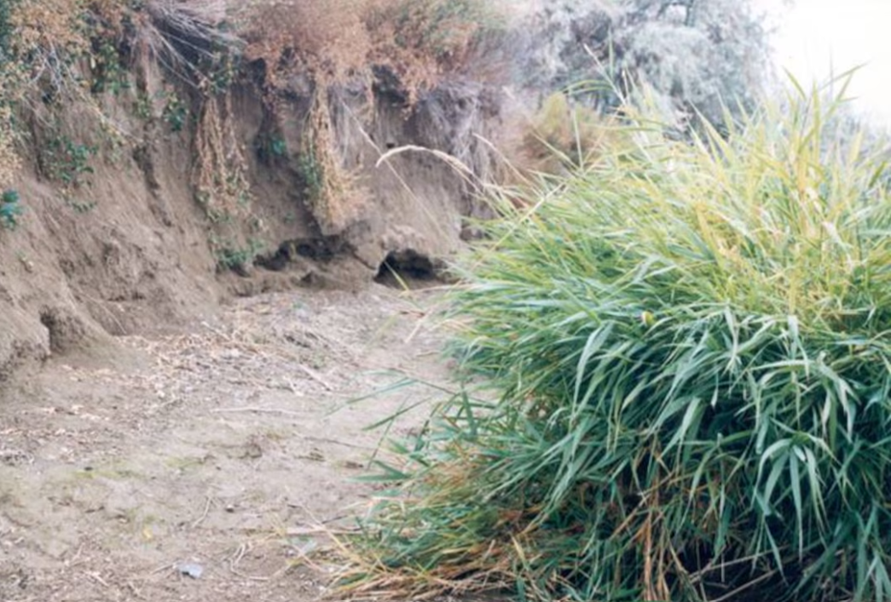

Welcome, Relatives
This space honors The Ancient One — known to science as Kennewick Man. He is not an artifact or a specimen. He is an ancestor, a teacher, and a reminder that Indigenous peoples have lived on this land since time immemorial. He was repatriated and reburied in 2017 by the five claimant tribes.

→ Save your image on Desktop as
bb.png
A Living Land Acknowledgement
This page is dedicated to The Ancient One, an ancestor of the Confederated Tribes of the Colville Reservation, the Nez Perce Tribe, the Confederated Tribes of the Umatilla Indian Reservation, the Confederated Tribes and Bands of the Yakama Nation, and the Wanapum People.
He was returned to the earth in 2017 after twenty years of legal struggle. His reburial was an act of spiritual law, not an archaeological event. Out of respect, this page does not display his remains or his likeness.
- The Columbia River is a relative — a provider, a spiritual being, and the ancestral lifeline of the Plateau peoples.
- Camas, bitterroot, and salmon are sacred foods that sustained generations since time immemorial.
- Cedar carries prayers. Its smoke purifies, protects, and carries messages to the Creator.
- His story is not ours to tell. It belongs to the tribes. This page only honors it.
Educational Anatomical Reference · Not the Ancient One
Drag to rotate · Scroll to zoom · Click any bone to learn more
Generic human anatomical diagram — not the Ancient One's remains. Provided as an educational reference so visitors can understand the bones described on this page. His actual remains were repatriated and reburied in 2017 and are not displayed anywhere.
Key Facts · Click any card to learn more
Plain-language explanations for everyone
"We have always been here. Our stories, our laws, and our connection to this land go back to the beginning."
— Tribal elder, Columbia Plateau